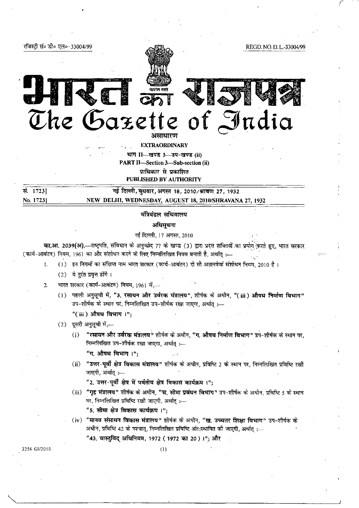
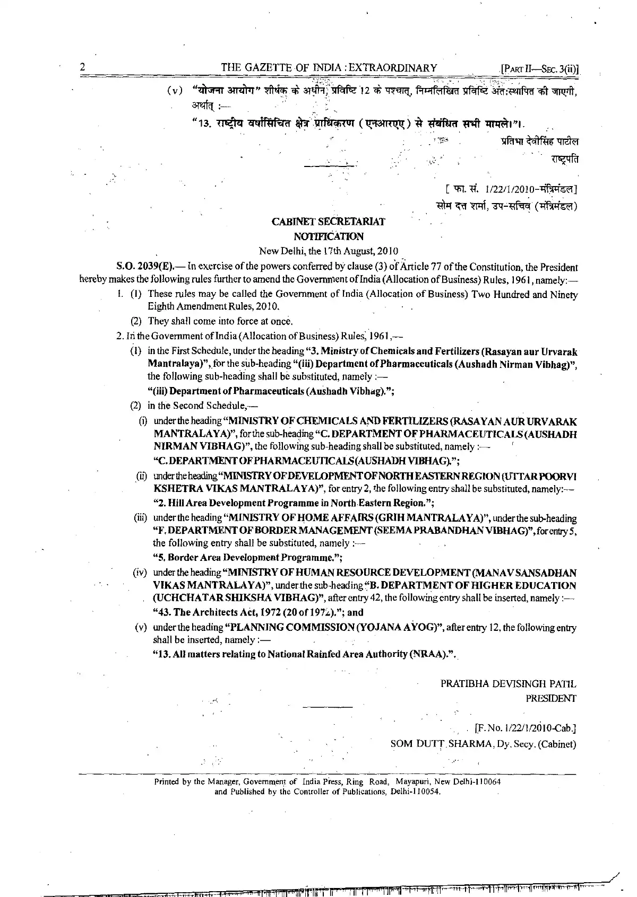

Amendment #298 (S.O. 2039(E), 2010)
6 changes: 1 to the First Schedule, 5 to the Second Schedule. 6 applied
The order, page by page
Page 1 of 2

Page 2 of 2

123456Schedule 1 › Ministry of Chemicals and Fertilizers › Department of Pharmaceuticals
- iii. Department of Pharmaceuticals
applied at schedule 1 › ministry 3 › department iii in the Rules after #298
Schedule 2 › MINISTRY OF CHEMICALS AND FERTILIZERS › DEPARTMENT OF PHARMACEUTICALS
- C. DEPARTMENT OF PHARMACEUTICALS
applied at schedule 2 › ministry MINISTRY OF CHEMICALS AND FERTILIZERS › department C in the Rules after #298
Schedule 2 › MINISTRY OF DEVELOPMENT OF NORTH EASTERN REGION › entry 2
- 2. Hill Area Development Programme in North Eastern Region.
applied at schedule 2 › ministry MINISTRY OF DEVELOPMENT OF NORTH EASTERN REGION › entry 2 in the Rules after #298
Schedule 2 › MINISTRY OF HOME AFFAIRS › DEPARTMENT OF BORDER MANAGEMENT › entry 5
- 5. Border Area Development Programme.
applied at schedule 2 › ministry MINISTRY OF HOME AFFAIRS › department F › entry 5 in the Rules after #298
after Schedule 2 › MINISTRY OF HUMAN RESOURCE DEVELOPMENT › DEPARTMENT OF HIGHER EDUCATION › entry 42
- 43. The Architects Act, 1972 (20 of 1972).
applied at schedule 2 › ministry MINISTRY OF HUMAN RESOURCE DEVELOPMENT › department B › entry 43 in the Rules after #298
after Schedule 2 › PLANNING COMMISSION › entry 12
- 13. All matters relating to National Rainfed Area Authority (NRAA).
applied at schedule 2 › ministry PLANNING COMMISSION › entry 13 in the Rules after #298
How this document was read
From the Government of India (Allocation of Business) Rules, 1961 and their amendments, as published by the Cabinet Secretariat (cabsec.gov.in), read by orgpedia. The readings of the older scanned gazettes have known gaps.